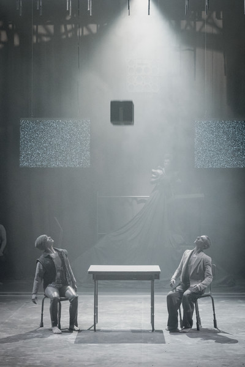
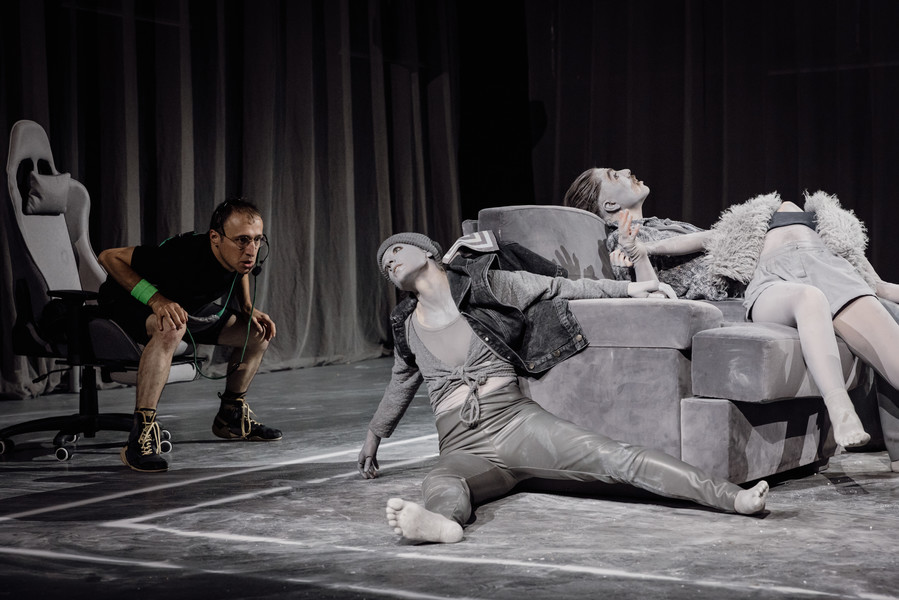

Le Jeudi 14 Novembre, J'ai eu l'occasion d'assister au Ring de Katharsy
,
une pièce qui fusionne les univers du jeu vidéo et du théâtre d'objets. Deux joueurs, placés chacun
d'un côté de la scène, s'affrontent au travers de trois personnages chacun, qu'ils choisissent au début.
La scène est transformée en un ring de six mètres sur six, où les deux joueurs manipulent les différents personnages dans une série de défis. Des objets tombent du plafond pour permettre aux personnages de les compléter.
La scénographie dominée par des tons gris crée une sorte d'atmosphère dystopique. Les seuls éléments en couleur dans ce monde gris sont les joueurs. Le contraste des couleurs illustre la différence entre les joueurs, "maîtres", et les personnages contraints de se plier aux ordres des joueurs. Au fil des affrontements, les avatars commencent à se rebeller, remettant en question la dynamique de contrôle établie par les joueurs depuis le début de la pièce.
Note: Nous avons eu l'occasion de rencontrer Stéphanie Chêne, chorégraphe pour cette pièce, lors de notre sortie au bercail.